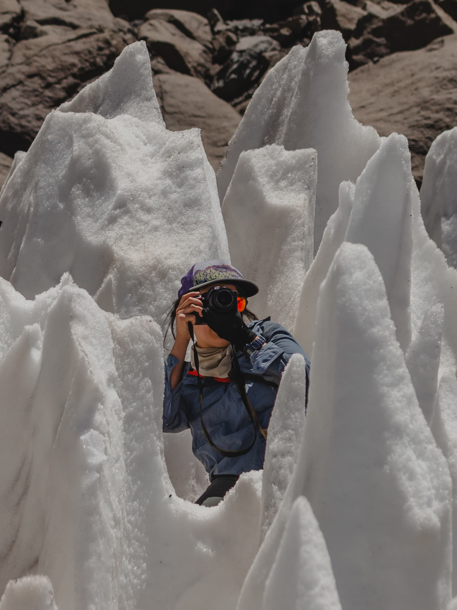
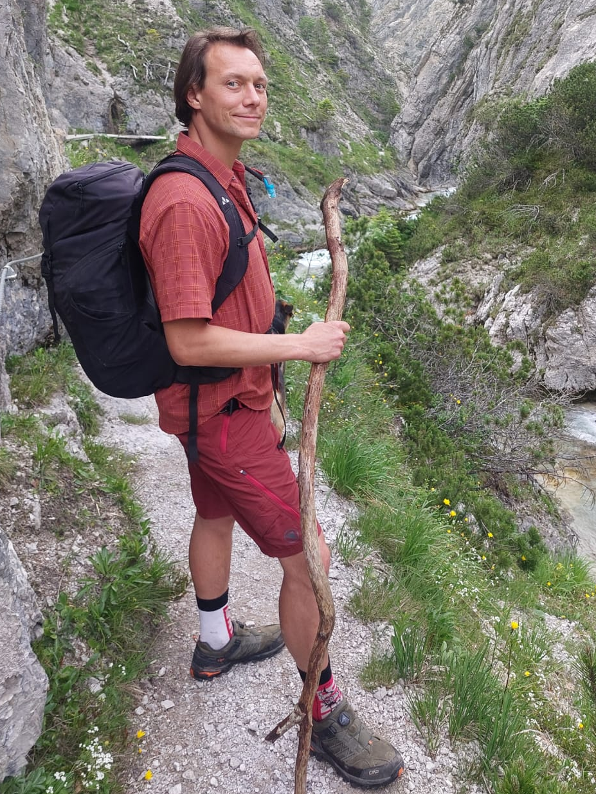

Camila Carneyro
Outdoor & Umweltbildung
Als Zertifizierte Bergführerin, Dozentin und Landschaftsarchitektin bin ich Expertin für Natur, Flora/Fauna und Outdoor-Erlebnisse. Nachhaltigkeit und ein vielseitiges Gasterlebnis sind mir extrem wichtig.

Jacqueline Vollmann
Restaurantfachfrau & Organisatorin
Als erfahrene Restaurantfachfrau mit Industriekaufmännischer Ausbildung war ich Stellvertretende Geschäftsführung in Großkonzernen und bringe starke wirtschaftliche und organisatorische Kompetenzen ein.

Toni Vollmann
Gastronomie & Hüttenführung
Mit jahrelanger Erfahrung in der Gastronomie, im Einzelhandel als stellvertretender Geschäftsführer und im Handwerk, bringe ich Leidenschaft für nachhaltige Küche, alpine Kultur und einen reibungslosen Betriebsablauf ein.